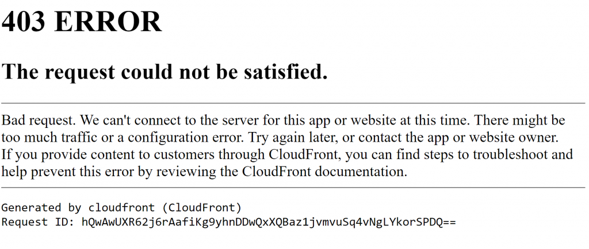
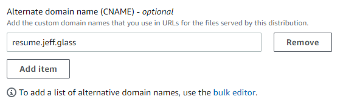
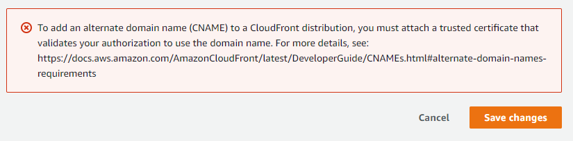
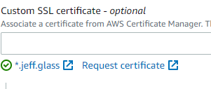

Custom Domain
Since I already have a custom domain at jeff.glass (which is likely where you're reading this, if you're reading this around the time of posting), I'd like to figure out how to point a subdomain of that site at my nascent Cloudfront/S3 static site. While I should probably also learn how to register a new domain through Amazon's Route 53 service, I think the end product will be cleaner.
I currently have the domain registered through NameCheap, and pointing to the DNS servers provided via my hosting at iWebFusion. The first thing I'll try is just using a CNAME to point resume.jeff.glass to the URL provided by my Cloudfront distribution.
But alas:

Some sites suggest that fixing this could be as simple as modifying a setting in the Cloudfront distribution settings:

But:

The key resource here is the article Using Alternate Domains and HTTPS
But it turns out, requesting certificates from the Amazon Certificate Manager is pretty simple. Click request certificate and specify what domains it applies to (which allows for using wildcard characters!). To validate that you do indeed control the domain you're requesting the certificate for, the ACM uses what they call "DNS Validation," which involves adding a single CNAME record to your DNS Zone records. Essentially, they give you a long, random-looking "subdomain" URL to redirect to a long, random-looking amazon URL. Then, by querying whether your site actually performs the redirect as requested, they can verify that you were indeed able to modify the DNS behavior of the site and therefore are the owner of that domain.
One trick is that, to use the generated certificate with Cloudfront, the certificate must be requested in the us-east-1 region, which may not be the region your bucket is in. (Since my most recent bucket is in us-east-2, it seems like my certificates were defaulting there as well. Or perhaps its geolocating me? Unclear). In any case, the simplest thing to do is use the "request certificate" link on the Cloudfront distribution settings, which automatically launches the wizard to request a new certificate in us-east-1.

With that certificate selected and the settings saved, my new site is available at https://resume.jeff.glass! Not that it's terribly interesting at the time of writing, but now it's got a tasteful URL.
Part of the reason I'm trying to document all the twists and turns of this process has to do with a later goal of the Cloud Resume Challenge. Namely, goal 11, which reads in full:
12. Infrastructure as Code
You should not be configuring your API resources – the DynamoDB table, the API Gateway, the Lambda function – manually, by clicking around in the AWS console. Instead, define them in an AWS Serverless Application Model (SAM) template and deploy them using the AWS SAM CLI. This is called “infrastructure as code” or IaC. It saves you time in the long run.
This will be an entirely new area of exploration for me, and from just a little examination will involve encapsulating chunks of the existing setup work in a format that it can be recreated automatically. Which parts of the setup? Unclear. It doesn't seem like HTTPS and Cloudfront setup are part of that, but I figure it can't hurt to write down the edge cases doing this by hand. I'd like to not trip over them again when I go to automate things.